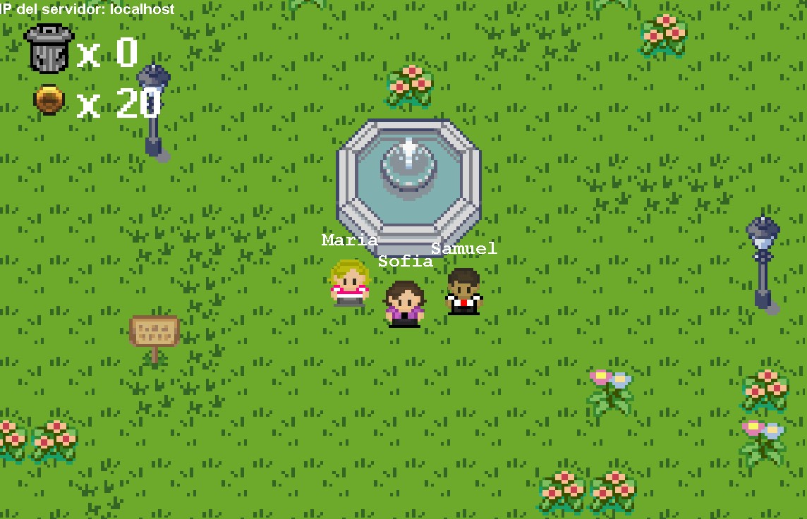
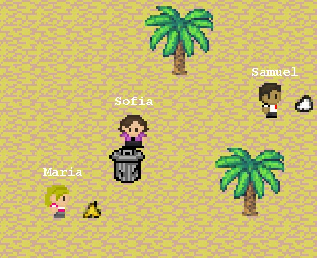
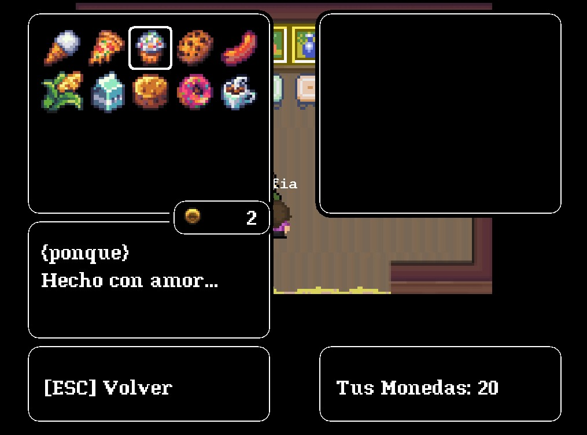

Descripción
Este es un juego creado en Java para el proyecto de Programación Orientada a Objetos. Sumérgete en un mundo lleno de desafíos y diversión.
Características
- Mensajes concientizadores
- Jugabilidad envolvente
- Multijugador en línea
- Múltiples zonas
Compromiso con los ODS
El juego está diseñado con un fuerte enfoque en los Objetivos de Desarrollo Sostenible (ODS) de las Naciones Unidas. A través de su narrativa y mecánicas, el juego busca concienciar a los jugadores sobre temas importantes como la conservación del medio ambiente.
Capturas de Pantalla



Controles:
- En el juego nos podemos mover usando ya sea con WASD, o con las flchas "UP, DOWN, LEFT y RIGHT".
- Presionando "Q" mientras nos dirigimos hacía un NPC, podemos hablar/interactuar con él.
- Presionando "SPACE" se quitan los diálogos con los NPC.
- Presionando "R" mientras nos dirigimos hacía ciertos objetos, podemos interactuar con ellos.
- Presionando "P" se activa la pausa, de la misma manera podemos quitarla.
- Presionando "C" tenemos acceso al inventario, podremos ver los objetos y sus respectivas descripciones, junto con navegar por el mismo con las teclas WASD o "UP, DOWN, LEFT y RIGHT".
- En el menú de la tienda podemos navegar entre opciones usando ya sea con WS, o con las flchas "UP y DOWN".
- Una vez seleccionemos una opción concreta tendremos acceso ya sea a la tienda para comprar objetos, o al inventario del usuario para vender objetos.
- Si seleccionamos ya sea, comprar o vender, podemos salir pulsando la tecla "ESC".
Del juego:
De la tienda:
Integrantes del proyecto:
- Ignacio Aliendres
- Samuel Guzmán
- Carlos Méndez
- María Sandoval